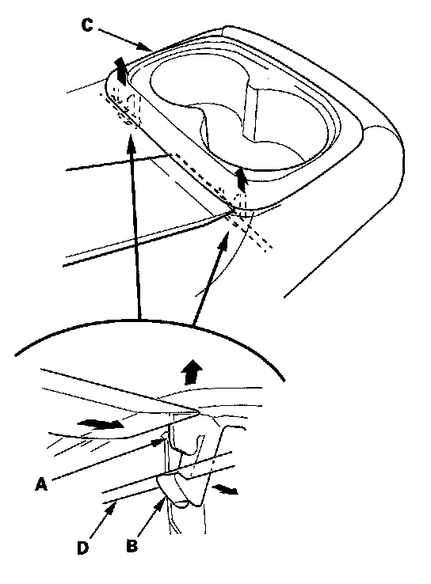
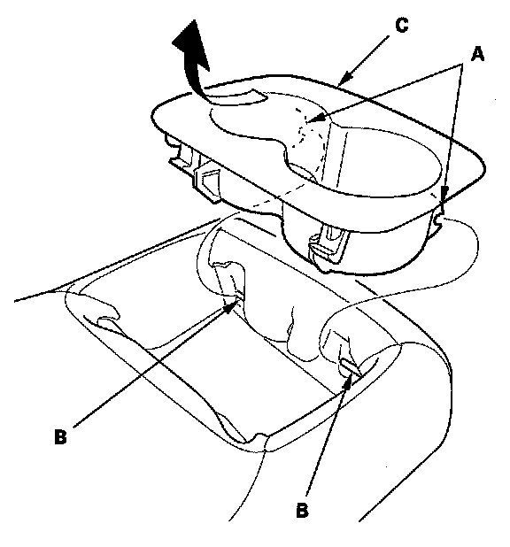

Rear Seat Armrest Beverage Holder Replacement
Rear Seat Armrest Beverage Holder ReplacementSpecial Tools Required
KTC trim tool set SOJATP2014 *
* Available through the American Honda Tool and Equipment Program
For Some Models - 4-door
NOTE:
- Use the appropriate tool from the KTC trim tool set to avoid damage when prying components.
- Take care not to tear the seams or damage the seat covers.

1. Using a trim tool, push on the bottom ribs (A) of the rear hooks (B) to pull up the beverage holder (C), then release the hooks from the wire (D).

2. Release the front hooks (A) from the wire (B), then remove the beverage holder (C).
3. Install the beverage holder in the reverse order of removal. Make sure the front hooks are installed securely to the wire, then push down on the beverage holder and install the rear hooks into the wire securely.